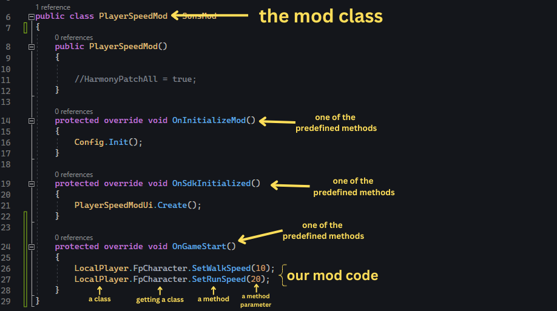

1.9 - Summing up mod structure
Understanding the mod structure
So now that we learned a bit of C# we can understand the mod structure.
Here is the code:
public class PlayerSpeedMod : SonsMod
{
public PlayerSpeedMod()
{
//HarmonyPatchAll = true;
}
protected override void OnInitializeMod()
{
Config.Init();
}
protected override void OnSdkInitialized()
{
PlayerSpeedModUi.Create();
}
protected override void OnGameStart()
{
LocalPlayer.FpCharacter.SetWalkSpeed(10);
LocalPlayer.FpCharacter.SetRunSpeed(20);
}
}
As we can see, the RedLoader mod template has automatically created a class for us named PlayerSpeedMod
and three predefined-methods.
We then wrote our mod code inside the OnGameStart method where we basically accessed the LocalPlayer
class, then the FpCharacter class, to reach the SetWalkSpeed and SetRunSpeed methods, to which
we passed a numeric value.
